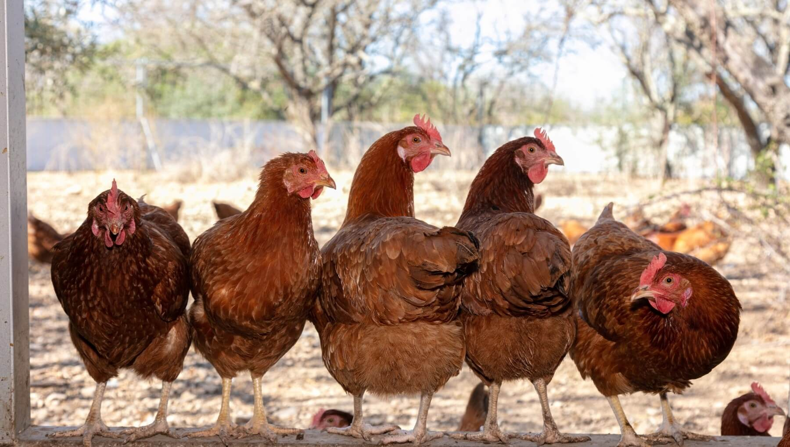

Gallinas Ponedoras
Con la creciente preocupación de la sociedad por la salud, la calidad de los alimentos y la forma en que se trata a los animales de producción, los nuevos requisitos del mercado no dejan lugar a dudas: promover el bienestar durante la crianza de las gallinas ponedoras aporta beneficios tanto a los animales, como a los productores y consumidores.
Teniendo en cuenta la importancia del sector avícola mencionado en líneas anteriores, hemos hecho una revisión sobre diversas razas de gallinas ponedoras o gallinas de postura y a continuación la ponemos a tu disposición ya que puede resultar muy útil a la hora de iniciar o potenciar tu negocio.
 Ponedora Isa Brown Ponedora Isa Brown |
 Ponedora Barrada Ponedora Barrada |
 Ponedora Blanca Ponedora Blanca |
 Ponedora Cuello Pelado Ponedora Cuello Pelado |
 Ponedora Campera Ponedora Campera |
 Ponedora Negra Ponedora Negra |
 Ponedora Susse Ponedora Susse |
| Encabezando la lista de Gallinas Ponedoras, se encuentra nuestra Ponedora de los Huevos de Oro. La ponedora de referencia desde hace más de 30 años en todo el mundo. ISA Brown se adapta a todos los climas y condiciones ambientales y es conocida mundialmente como la ponedora más “eficiente” del mercado, capaz de poner hasta 500 huevos de la mejor calidad | También llamada jabada franciscana, pedresa, loriga o amóchala, fue creada con cruces de líneas de Plymouth Rock Barrada y Blanca. Es una ponedora con cualidades óptimas para la cría doméstica y sistema. Es una gallina semipesada que alcanza los dos (2) kilos con un buen porcentaje de puesta de huevos de unos 280 huevos anuales de 63 gr y color moreno. | También conocida como Leghorn, fue creada en Estados Unidos a partir de gallinas importadas en 1835 de Italia. Esta ave en la actualidad es una de las más conocidas a nivel mundial por su excelente calidad productiva, pues la mayor parte de la producción mundial de huevos de cáscara blanca proviene de las gallinas Leghorn. | La gallina ponedora Piroca o Cuello pelado, es un ave semipesada que alcanza los 2,5 kg y se caracteriza por un cuello muy rojo y sin plumas. | Son las hermanas de los pollos camperos de engorde, tienen un gran potencial genético, así como excelentes cualidades para la cría rural. | Tiene sus orígenes en un cruce desarrollado en Estados Unidos en los años 60, generando una ponedora autosexable. En la actualidad es la ponedora de color con mayor éxito en la gama rural pues posee un sistema inmunológico muy desarrollado. | Esta gallina ponedora tiene sus orígenes a mediados de siglo XX. Se caracteriza por su carácter dócil y buena puesta. Puede llegar a pesar 2 kg y poner 280 huevos anuales de 58 gr que van desde el color amarillo hasta el marrón crema. |
¿Cómo Criar Gallinas Ponedoras?

Para criar gallinas ponedoras en casa primero debes tener en cuenta el espacio que tienes disponible en el hogar y cuánto de éste puedes destinar para la cría de las gallinas ponedoras. Una vez hecho esto, puedes preparar y acondicionar el espacio seleccionado para evitar el hacinamiento de las gallinas, así como el brote de enfermedades producidas por los desperdicios de comida y los fisiológicos de las aves, los cuales pueden atraer plagas indeseadas como moscas y ratones.